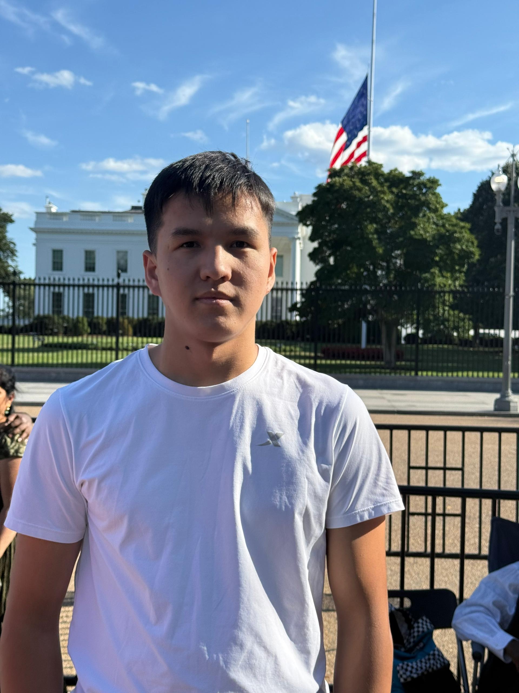

We started as a small idea between two students who wished they'd had better guidance. Today we're a growing community built on genuine human connection.
MentorBridge was founded in Fall 2024 by two juniors who noticed something missing on campus — not tutoring centers or academic advisors, but real human connection. Students were struggling not just with coursework, but with loneliness, lack of direction, poor habits, and a feeling that nobody around them truly understood what they were going through.
The idea was simple: pair students together like siblings. Not as a service, not as a transaction — but as a genuine bond where both people grow. The mentor gains leadership and teaching experience. The mentee gains a guide, an accountability partner, and a friend.
What started with 4 pairs in our first semester has grown to over 15 active pairs across every major and every year group. We don't plan to stop growing — because there's always another student who needs someone in their corner.
We believe every person has untapped potential. Growth isn't just academic — it's physical, spiritual, professional, and relational.
Mentor-mentee relationships are built like family bonds — honest, caring, long-term, and mutual. Not a service. A relationship.
We show up for each other. Goals are set, progress is tracked, and when someone falls behind, we lift them — not judge them.
Every background, major, faith, and personality is welcome. Growth is universal. MentorBridge is for everyone.
Every meeting, event, and interaction has intention behind it. We don't waste each other's time — we invest it.
We mean what we say. No performance, no clout-chasing. Just real people who genuinely want to see each other succeed.
The students who built this from nothing.

Junior, Computer Science. Beknazar had the original vision — a club that treats mentorship as a lifestyle, not a service. He leads strategy and member matching.
Junior, Communications. Nurzhigit plans every event, manages social media, and makes sure MentorBridge feels like a real community, not just a club.
To build a university community where every student has at least one person in their corner — guiding them, believing in them, and growing alongside them across every dimension of life.
Join the CommunityYes. We are a registered student organization under the Office of Student Life. All club activities are covered under university guidelines.
No. Membership is completely free for both mentors and mentees. We are funded through university student org grants and voluntary donations.
We take matching seriously, but if a pair isn't working after the first two weeks, we re-match without any questions asked. Your growth matters more than any pairing.
Yes — and we encourage it. Many senior members mentor a younger student while also being mentored by a graduate student or alumni volunteer.